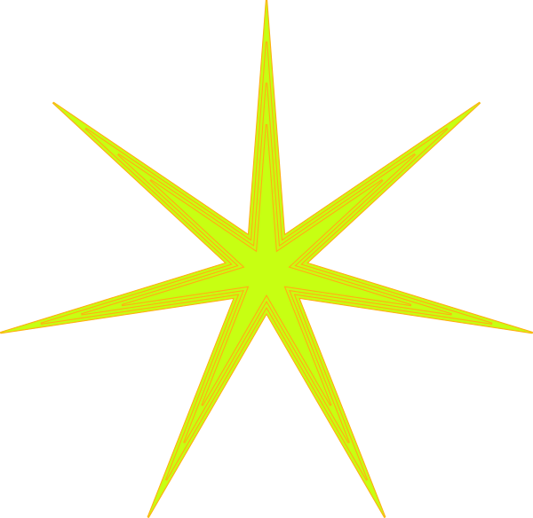
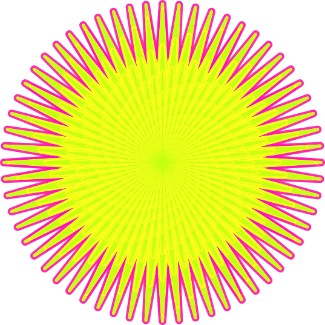

 home
home
reflection
I mostly used rotation translations on this page, because I really love the way the css makes the images Go. I also like the translate transformation, because when combined with the rotate transformation it makes the images roll away! Which is very cute! I loved slowing down the spinning too, so i could reall roll them across the screen. Putting the images in different places really made it look like a sky full of stars. I did have to troubleshoot the moon- I made an honest attempt at making it roll off too, but it refused to budge. In the end I left it alone. I would love to experiment more with the "skew" transformation.